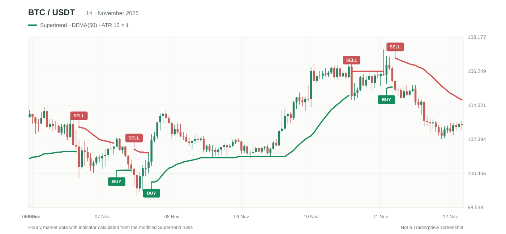

Indicator modification / Strategy
Supertrend + DEMA: What changed and how the new strategy works
A simple walkthrough of the original indicator, the requirements and the downloadable code.
I share Pine Script indicators and strategies I've worked on, explain what each one does, and make example code available so you can test it on your own TradingView charts.

How I changed the original Supertrend to open and reverse trades whenever a new signal appears.
Read the articleA modified Supertrend that uses DEMA as its source and converts buy/sell signals into simulated long and short trades.

A simple walkthrough of the original indicator, the requirements and the downloadable code.
How the source setting changes the indicator, illustrated using real chart examples.
I'm a software engineer who works on TradingView indicators and Pine Script strategies. This is where I share some of the scripts, the original ideas behind them, and what I changed along the way. The aim is to keep everything easy to understand, even if you're new to Pine Script.
If you run into any issues with installation, chart configuration, or anything related to a script, feel free to contact me on GitHub.